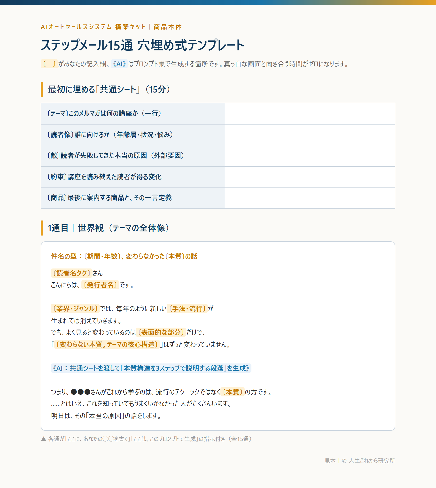
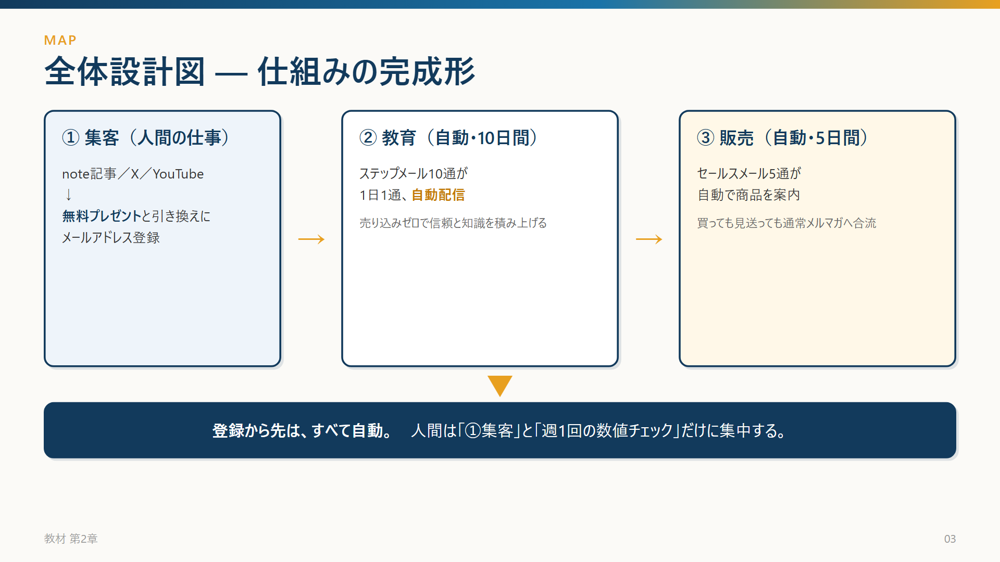
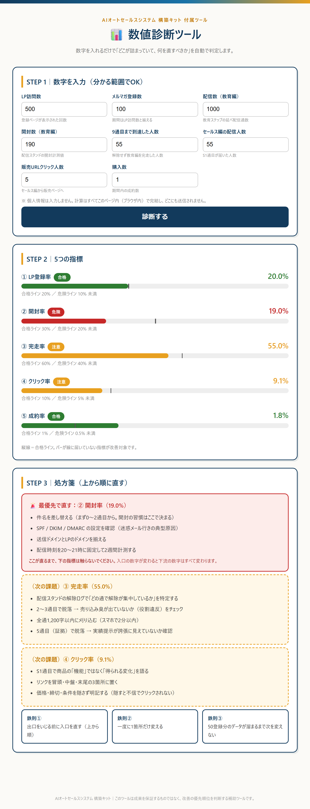

言葉での説明より早いので、実物をお見せします。
各通に「ここに、あなたの◯◯を書く」「ここは、このAIプロンプトで生成する」という指示が入っています。 真っ白な画面と向き合う時間が、ゼロになります。

仕組みの全体像を1枚ずつ図解しています。テキストを読む前の「地図」として使えます。

数字を入れると「どこが詰まっていて、何を最優先で直すか」を自動で判定します。 2012年の私に一番足りなかったのが、これでした。
